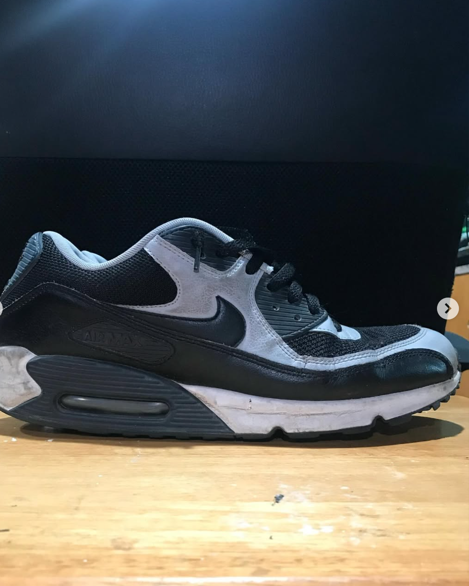

Our Services
Home
About Us
Services
Locations
Contact Us
What We Offer
✔ Comprehensive shoe cleaning and restoration
✔ Premium care for designer and luxury footwear
✔ Eco-friendly cleaning products and methods
✔ Customized restoration for sneakers and boots
✔ Protection and preservation services
Before & After
Before Restoration
After Restoration

Before Restoration
After Restoration